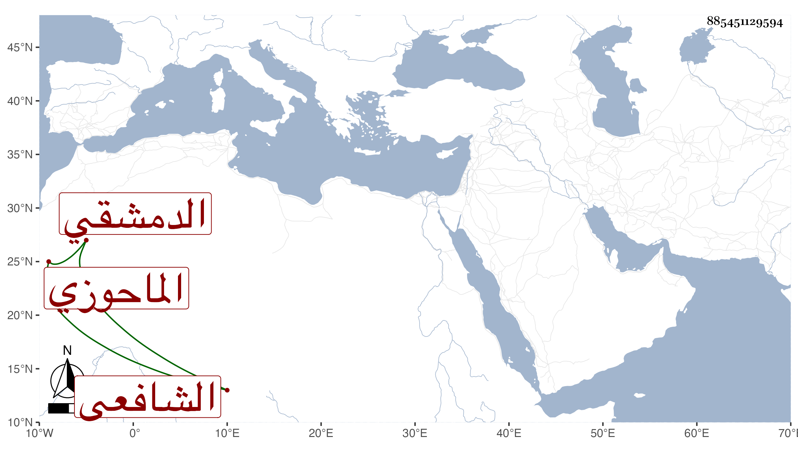

0902Sakhawi.DawLamic.ITO20230111-ara1.EIS1600.885451129594
Biography ID: 885451129594
إبراهيم بن أبي بكر الماحوزي الأصل الدمشقي الشافعي تفقه قليلا وسلك طريق التصوف مع الدين المتين وكثرة المال بحيث لم يكن يقبل لأحد شيئا بل ينهى أصحابه عن الأكل لأحد وكانت تلك طريقة والده وتزايد اعتقاد الناس فيه حتى كان قل أن يرد أحد من الأمراء رسالته وقد حج عشرين حجة فبقي في كل مرة يحصل به للناس النفع الزائد ومات راجعا من الحج في المحرم سنة أربع عشرة . ودفن بتبوك ولم يكمل الستين رحمه الله . ترجمه شيخنا في أنبائه وصرح في أثناء الترجمة بأنه ابن الشيخ أبي بكر الموصلي فإن يكن كذلك فهو ابن عبد الله وقد مات يعني الأب في سنة سبع وتسعين وسبعمائة .
